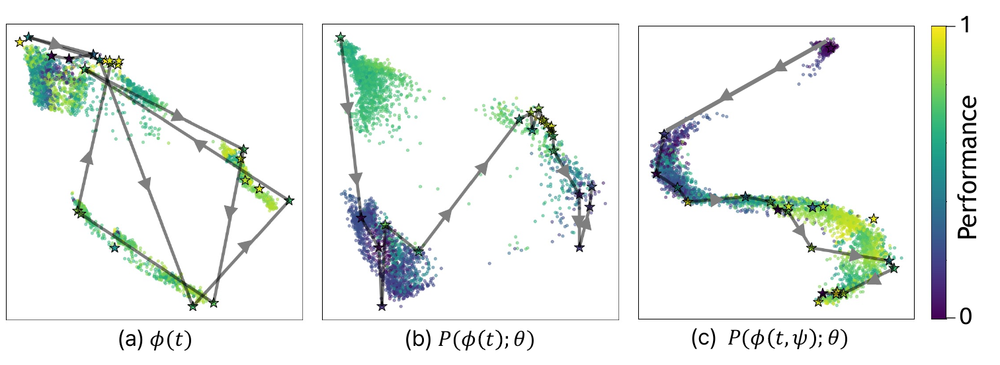

1Graduate School of AI, POSTECH
2Department of Electrical Engineering, KAIST 3Department of Electrical Engineering, POSTECH
4School of Computing, KAIST †Corresponding author
Fine-tuning Large Language Models (LLMs) with Low-Rank Adaptation (LoRA) offers a resource-efficient way to personalize or specialize. However, LoRA is highly sensitive to hyperparameter choices, and performing an exhaustive hyperparameter search remains computationally intensive. To address these challenges, we propose a framework that integrates the domain knowledge of pre-trained LLMs into the Bayesian Optimization (BO) process to efficiently search for LoRA hyperparameters.
To leverage pre-trained LLMs' knowledge, our approach repurposes them as a discrete-to-continuous mapping module to link hyperparameters and their domain knowledge to a continuous vector space, where BO is conducted. We design and control the mapping via language prompting, providing a domain-aware textual prompt that describes the relationships among hyperparameters and their respective roles. This allows us to explicitly inject domain knowledge about LoRA into the LLM in natural language. We also introduce an additional learnable token to capture residual information that is difficult to describe linguistically in the prompt. This aids BO to sample more high-performing hyperparameters.
In addition, by leveraging the strong correlation observed between the performance obtained from full and subset training datasets in LoRA training regimes, we introduce proxy training and evaluation using a data subset. This significantly improves the efficiency of our method. We demonstrate that our hyperparameter, discovered with only about 30 iterations, achieves more than 20% performance improvement over standard hyperparameters found from about 45,000 combinations. Code will be released.
Results
Results of applying our framework to LoRA variants.
We set the hyperparameter configurations suggested by each work, where they were dedicatedly tuned (Kalajdzievski, 2023; Liu et al., 2024b; Meng et al., 2024; Wang et al., 2024). Using our method, we observe consistent performance improvements across all variants.
Strategy
Ours
Accuracy (%)
Pass@1
GPT-Score
GSM8K
MATH
HumanEval
MBPP
MT-Bench
LoRA (Hu et al., 2022)
✗
41.47
5.24
16.31
35.47
7.181
✓
62.93 (+21.46)
12.88 (+7.64)
30.49 (+14.18)
42.59 (+7.12)
7.350 (+0.169)
rsLoRA (Kalajdzievski, 2023)
✗
41.16
5.46
16.46
35.72
7.300
✓
58.15 (+16.99)
10.76 (+5.30)
29.87 (+13.41)
42.06 (+6.34)
7.662 (+0.362)
DoRA (Liu et al., 2024b)
✗
40.11
5.36
17.07
36.51
7.125
✓
57.01 (+16.90)
10.78 (+5.42)
30.58 (+13.51)
42.33 (+5.82)
7.475 (+0.350)
PiSSA (Meng et al., 2024)
✗
52.46
7.34
22.56
40.48
7.200
✓
60.88 (+8.42)
12.06 (+4.72)
31.71 (+9.15)
41.53 (+1.05)
7.475 (+0.275)
Results of applying our framework across diverse models.
We compare against the hyperparameter settings suggested by PiSSA (Meng et al., 2024), where they were dedicatedly tuned. The experiments demonstrate that our method is effective across a wide range of models.
Model
Ours
Accuracy (%)
Pass@1
GPT-Score
GSM8K
MATH
HumanEval
MBPP
MT-Bench
LLaMA2-7B (Touvron et al., 2023)
✗
41.47
5.24
16.31
35.47
7.181
✓
62.93 (+21.46)
12.88 (+7.64)
30.49 (+14.18)
42.59 (+7.12)
7.350 (+0.169)
Mistral-7B-v0.1 (Jiang et al., 2023)
✗
69.90
19.96
45.73
61.90
8.425
✓
74.07 (+4.17)
23.46 (+3.50)
54.27 (+8.54)
65.08 (+3.18)
8.688 (+0.263)
Gemma-7B (Team et al., 2024)
✗
75.51
29.44
49.39
63.23
8.363
✓
78.77 (+3.26)
30.24 (+0.80)
53.05 (+3.66)
67.46 (+4.23)
8.488 (+0.125)
Qualitative Results
Qualitative ablation study of our components.

We visualize how the embedding space evolves with our proposed components: (a) shows the embedding space from a frozen LLM ϕ; (b) shows the space when a projection layer P(·; θ) is added to the frozen LLM; and (c) shows the space when both the projection layer and the learnable token ψ are employed. Dots are all possible points, and stars indicate visited points during the optimization. The trajectories in each figure indicate the main paths across steps, shown in arrow sequence. For clarity, only a few selected optimization trajectories are shown in each figure. These results suggest that incorporating the projection layer and learnable token produces a smoother, more structured embedding space, thereby enabling efficient optimization.
BibTeX
@inproceedings{baek2026language,
title = {A Language-Guided Bayesian Optimization for Efficient LoRA Hyperparameter Search},
author = {Baek, Seong-Eun and Lee, Jung-Mok and Kim, Sung-Bin and Oh, Tae-Hyun},
booktitle = {Proceedings of the International Conference on Machine Learning (ICML)},
year = {2026}
}